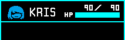
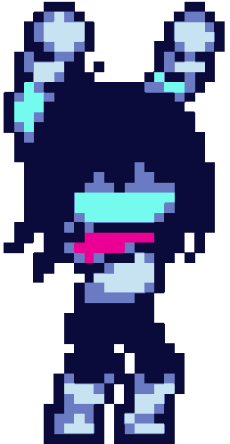

* NAVIGATE using the action buttons.
* SIFFRIN - A 18 PR THEY/THEM
* An internet lurker. Quiet yet friendly, this appears to be their home. A very 'isolated area' on the web of sorts, as a means of free expression.
* They hope you enjoy your stay!


K-ACTION